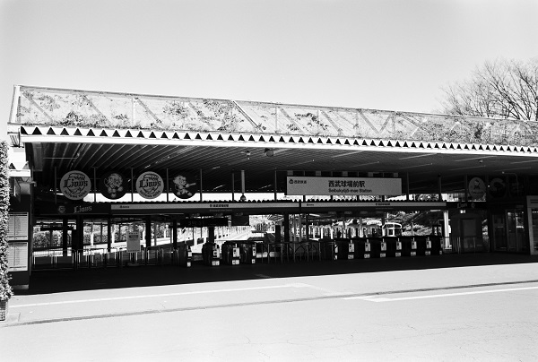

SI41 西武狭山線 SY03西武山口線
西武球場前駅 Seibukyuzyo mae
西武狭山線 →→
下山口駅
遊園地西駅
←← 西武山口線

2018/2/20 ﾐﾉﾙﾀCLE 35mm ｱｸﾛｽ
2018/2/20 ﾐﾉﾙﾀCLE 35mm ｱｸﾛｽ
2018/2/20 ﾐﾉﾙﾀCLE 35mm ｱｸﾛｽ
2018/2/20 ﾐﾉﾙﾀCLE 35mm ｱｸﾛｽ
2018/2/20 ﾐﾉﾙﾀCLE 35mm ｱｸﾛｽ
戻る
ﾎｰﾑ